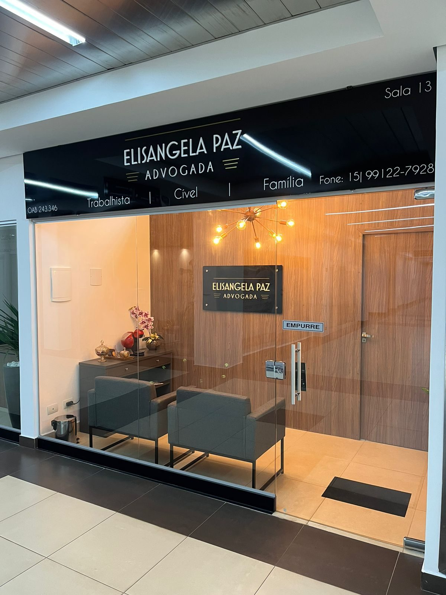

Direito Trabalhista
Acidente de trabalho, insalubridade e periculosidade, assédio moral, justa causa, vínculo empregatício e outros.
Direito de Família e Sucessões, Civil, Trabalhista e Contratos.
Quatro frentes de atuação, sempre com o mesmo jeito de atender: você explica a situação, ela orienta com clareza sobre o que é possível fazer.
Acidente de trabalho, insalubridade e periculosidade, assédio moral, justa causa, vínculo empregatício e outros.
Inventário, divórcio e união estável, ação de alimentos (exoneração, revisional), guarda e regulamentação de visitas, interdição e outros.
Indenizações por danos morais e materiais, cobrança e execuções de títulos de crédito, obrigações de fazer e não fazer, ações de despejo e outros.
Contratos de compra e venda, locação, assessoria para aquisição de imóveis, emissão de certidões.
Não sabe em qual dessas áreas seu caso se encaixa? Entre em contato conosco.
Falar no WhatsAppAtendimento diferenciado e humanizado do primeiro contato até a solução da sua demanda!
Após compreender o caso, você recebe uma orientação inicial sobre as possibilidades e os próximos passos.
Durante o acompanhamento, você recebe informações sobre as principais movimentações do caso.
“Com certeza indicarei os serviços aos meus amigos e todos que conheço.”
“O local possui estacionamento, o que facilita muito.”
Avaliações públicas do perfil no Google. Ver perfil completo no Google
Elisângela Paz é advogada com mais de 20 anos de experiência, com atuação nas áreas de Direito Trabalhista, Direito de Família e Direito Civil. Com escritório em Boituva, atende clientes de toda a região, oferecendo uma advocacia pautada pela experiência, proximidade e atendimento personalizado.
Ao longo de sua trajetória profissional, acumulou ampla experiência tanto na atuação consultiva quanto no contencioso, acompanhando centenas de processos e diferentes situações jurídicas. Essa vivência permite uma análise cuidadosa de cada caso, buscando orientar seus clientes de forma clara e estratégica sobre seus direitos e as melhores alternativas para cada situação.
Sua experiência profissional também se estende a grandes centros, incluindo São Paulo e Minas Gerais, ampliando sua visão e conhecimento sobre diferentes demandas e realidades jurídicas.
Jéssica Mendes é formada em Direito e possui mais de quatro anos de experiência na área jurídica, com atuação voltada às áreas de Direito de Família e Sucessões e Direito Civil.
Sua experiência abrange a elaboração e análise de contratos, especialmente de compra e venda e locação, bem como emissão de certidões em todos os órgãos.
Pauta sua atuação pela ética, responsabilidade e constante busca por soluções jurídicas seguras e adequadas às necessidades de cada cliente, oferecendo um atendimento técnico, personalizado e comprometido.
No primeiro contato, você poderá apresentar sua situação e esclarecer suas principais dúvidas. A partir da análise inicial do caso, serão fornecidas as orientações jurídicas cabíveis e indicados os possíveis próximos passos.
O atendimento é realizado de forma clara e acessível, respeitando as particularidades de cada situação.
Não. O primeiro contato e parte do acompanhamento podem ser realizados por canais digitais, proporcionando maior praticidade ao cliente.
Quando necessário, também são realizados atendimentos presenciais no escritório, localizado no Boituva Business Park, em Boituva/SP.
Os documentos relacionados ao caso podem contribuir para uma análise inicial mais completa, mas nem sempre são indispensáveis no primeiro contato.
Caso possua contratos, certidões, notificações ou outros documentos relacionados à situação, é recomendável apresentá-los durante o atendimento.
O prazo de um processo pode variar de acordo com diversos fatores, como a natureza do caso, a complexidade da questão e os procedimentos adotados pelo órgão responsável. Por esse motivo, não é possível estabelecer ou garantir previamente um prazo para a conclusão.
Após a análise do caso, poderão ser fornecidas informações mais detalhadas sobre as etapas envolvidas e uma estimativa compatível com a situação.
Sim. O escritório atende clientes de Boituva e região, incluindo cidades como Iperó, Porto Feliz, Sorocaba, Cerquilho e Tatuí.
Dependendo da natureza do caso, parte dos atendimentos e acompanhamentos pode ser realizada de forma remota.
Sim. Nem todas as situações precisam ser resolvidas por meio de um processo judicial. Dependendo do caso, é possível buscar soluções extrajudiciais, como negociações, acordos, elaboração de documentos e outros procedimentos realizados fora do Judiciário.
Após a análise da situação, serão avaliadas as alternativas juridicamente adequadas, buscando sempre a solução mais segura e compatível com as necessidades de cada caso.
